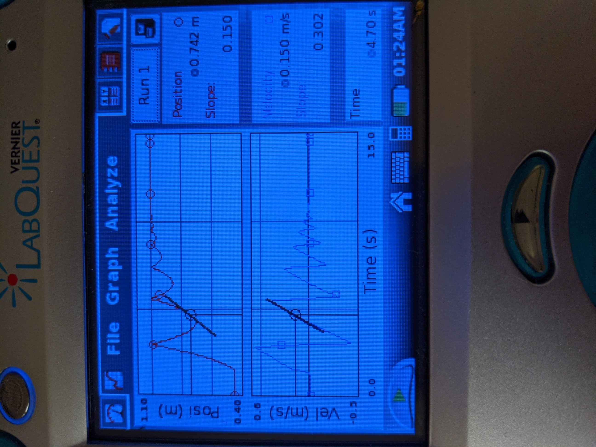
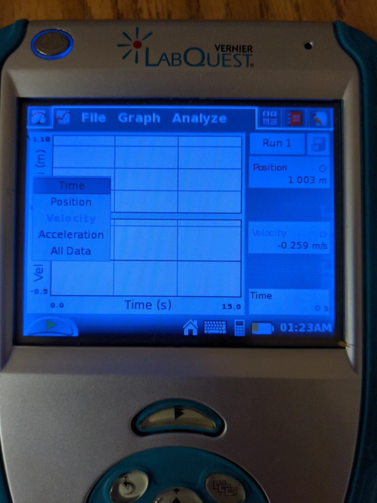
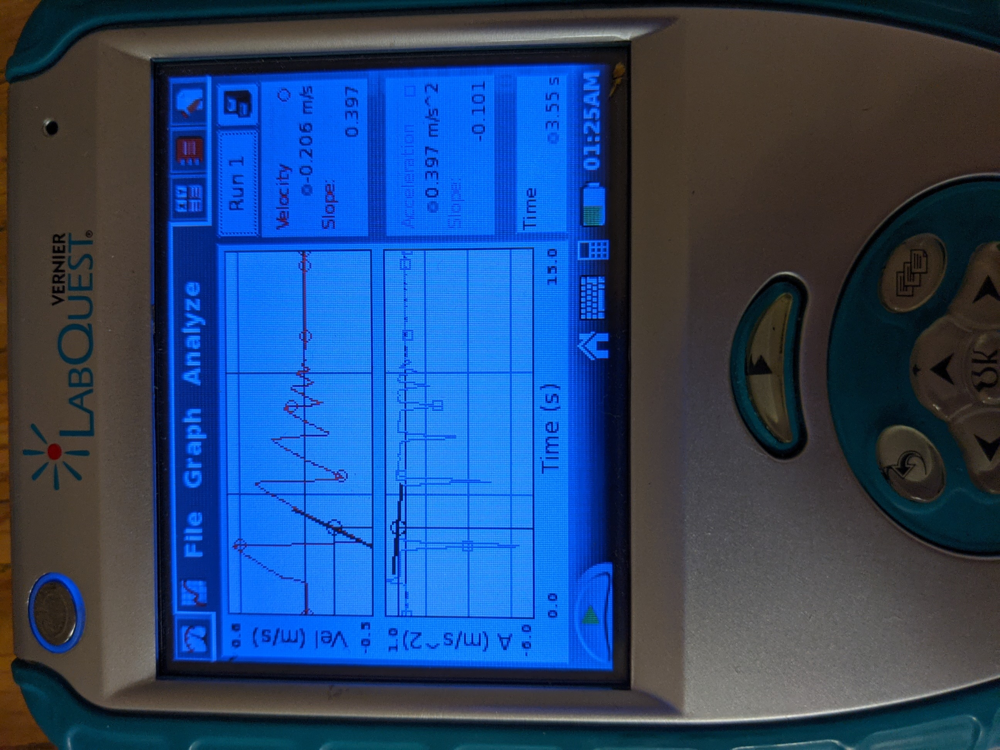
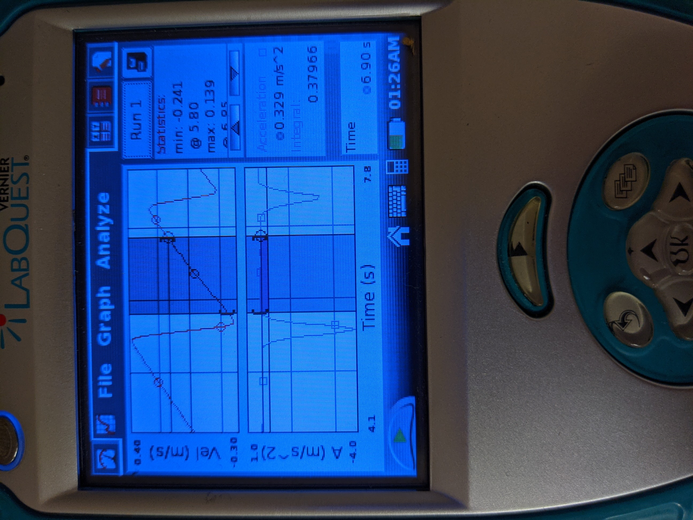
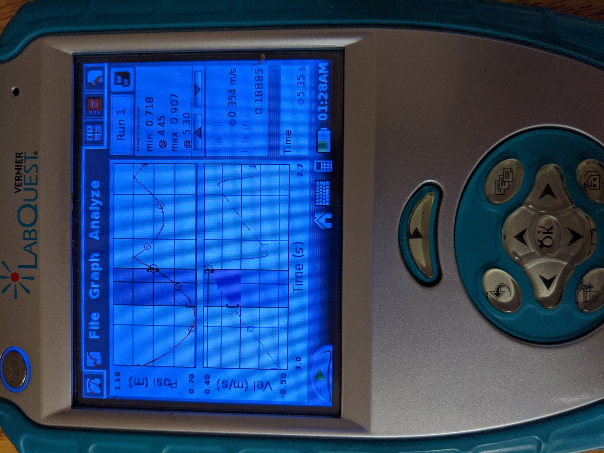

In this investigation, you will be exploring the graphs of motion in order
to understand how they relate to each other. You will be exploring both the
tangents and integrals of these graphs. It is expected that you gain an
understanding of the connection graphs of position, velocity, and acceleration
have with each other. You will also be analyzing what the shape of a
particular graph tells you about its motion.
The tangent of a line tells you the instantaneous
slope at any given point. It is useful in analyzing graphs
of motion. You will explore what the tangent, or slope, of
two different types of graphs will show you.
Slope of Position
Make sure you can see both the position and velocity graphs
Under 'Analyze' choose 'Tangent'

Select a point on the position graph and record the slope at that point
under slope-velocity 1
Record the value of the velocity at that point as well.
NOT THE SLOPE of the velocity, just the velocity
Find a slope-velocity pair for one other point on the position graph
Slope of Velocity
Click on 'Position' next to the top graph and change it to 'Velocity'
Click on 'Velocity' next to the bottom graph and change it to 'Acceleration'

Select 'Tangent' again from the 'Analyze' menu
Select a point on the velocity graph and record the slope at that point
under slope-accel 1

Recorrd the value of the Acceleration at that point as well.
NOT THE SLOPE of the acceleration, just the acceleration.
Find a slope-acceleration pair for one other point on the velocity graph
The area under a slope of a graph is defined as the region between
the plot and the x-axis. If the plot is above the x-axis, then the
area is considered to be positive. If the area is below the x-axis
then the area is considered to be negative. In calculus we use the
integral to find the area under a curve. Area is useful in analyzing
graphs of motion. You will explore the integral, or area, of two
different types of graphs.
Area of Acceleration
Zoom in so that you can only see a few bounces on your screen
Highlight an area of the velocity graph that is a continuous slope

See how the highlighted area is between the steep dips on the graph.
This is very important or the numbers will not come out correctly.
Under the 'Analyze' menu, select 'Integral' and choose 'Acceleration'
Record the integral of the acceleration that you have selected
Under the 'Analyze' menu, select 'Statistics' and choose 'Velocity'
Record the maximum and minimum velocities over the highlighted area
Find the change in velocity using the idea that ΔV = Vf - Vi
In this case you will use max velocity as Vf and min velocity as Vi
Find one more area-ΔV pair for your acceleration graph
Area of Velocity
Change the bottom graph to velocity and the top graph to position
Zoom in so that you can only see a few bounces on your screen
Highlight and area of the position graph where the graph is constantly sloping up

Notice that the highlighted section is constantly sloping up and
the velocity is constantly positive. This will be important to analyze
the data.
Under the 'Analyze' menu, select 'Integral' and choose 'Velocity'
Record the integral of the velocity that you have selected
Under the 'Analyze' menu, select 'Statistics' and choose 'Position'
Record the maximum and minimum positions over the highlighted area
Find the change in position using the idea that Δs = sf - si
In this case you will use max position as sf and min position as si
Find one more area-Δs pair for your velocity graph.